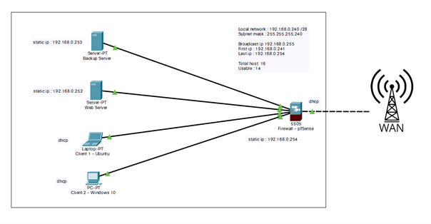

Definition réseau - Plan d'adressage

Le plan d’adressage que nous avons prévu pour l’infrastructure réseau est le suivant :
&emspIp du réseau : 192.168.0.240
&emspMasque de sous réseau : 255.255.255.240 (/28)
&emspNombre total d’hôte : 16
&emspNombre d’hôte utilisable : 14
&emspBroadcast IP : 192.168.0.255
&emspPremiere IP : 192.168.0.241
&emspDerniere IP : 192.168.0.254
Nous avons prévu un masque de sous réseau permettant jusqu’à 14 hôtes utilisables. Cette option a été choisis afin de permettre un petit peu de marge dans le cas où l’entreprise s’agrandirai, cela permettra l’ajout de nouvelle machine plus facilement sans avoir à faire de grosse modification sur l’infrastructure.
Nous avons défini 3 ip statique, de .252 à .254, dans l’ordre, serveur web, serveur de sauvegarde, pare-feu. Les poste de travails quant à eux se verront adresser une ip dynamique.
Dans la configuration du DHCP nous avons décidé de n’attribuer des ip qu’entre .241 et .250 afin de conserver quelques ip libre si l’entreprise aurait besoin d’ajouter de nouvelles machines nécessitant une ip statique.